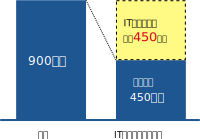
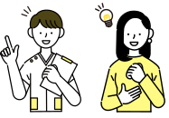

ネットショップ・Webサイトを持ちたいけど、全く知識がない。
システムを導入したいけど、やり方が分からない。
質の良いWebサイトを制作したいけど、費用は安く抑えたい。
制作後のメンテナンスが不安。
補助金を活用して何かITを導入したい。
補助金の申請が大変そう。

最大450万円
最短3日
ネットショップ・Webサイトを持ちたいけど、全く知識がない。
システムを導入したいけど、やり方が分からない。
質の良いWebサイトを制作したいけど、費用は安く抑えたい。
制作後のメンテナンスが不安。
補助金を活用して何かITを導入したい。
補助金の申請が大変そう。
弊社では、補助金を活用して以下のサービスが可能です。
※ご自身の事業が対象かわからない場合も確認できます！
お気軽にお問い合わせください。
通販サイトを作成することで、オンラインからの売上獲得を狙えます。
自社サイトを作成すると、企業としての信頼感を得られるだけでなく集客効果もあります。
予約システムや在庫管理システムを作成して、お悩みを解決 &業務効率化を実現しませんか？
自社の商品や店舗の様子などを動画にして、視線を引く広告物を作成しませんか？
LINEの公式アカウントを作成することで、お客様とのスムーズなやり取りや予約が出来るようになります。
国が事業者の取り組みをサポートするために、
取り組みの資金の全額もしくは一部を給付するというものです。
さまざまな分野で募集されているため、自分の事業とマッチする補助金を確認して申請する必要があります。
中小企業・小規模事業者等が自社の課題やニーズに合った「ITツール」を導入する経費の一部を補助する補助金
小規模事業者が自社の経営を見直し、自らが持続的な経営に向けた経営計画を作成した上で行う販路開拓や生産性向上の取組を支援する補助金
中小企業等による生産性向上に資する革新的サービス開発・試作品開発・生産プロセスの改善を行うための設備投資を支援する補助金
新分野展開、事業転換、業種転換、業態転換、又は事業再編という思い切った事業再構築に意欲を有する中小企業等の挑戦を支援する補助金
費用の1/2、最大450万円を補助
様々な業種・組織形態に対応
※デジタル化基盤導入枠（デジタル化基盤導入類型）の場合
| 1次締切分 | 2023年 4月25日（火） 17:00 |
|---|---|
| 2次締切分 | 2023年 5月16日（火） 17:00 |
| 3次締切分 | 2023年 6月 2日（金） 17:00 |
| 4次締切分 | 2023年 6月20日（火） 17:00 |
| 5次締切分 | 2023年 7月10日（月） 17:00 |
※詳細な情報は、IT導入補助金の公式サイトでご確認いただけます。
貴社の状況をヒアリングさせていただき、申請要件に該当することが確認できたら、ご希望に応じて申請書作成と提出をサポートいたします。
補助金が採択されるかどうかは審査があります。採択が決定したら、プロジェクト開始となります。
制作したいネットショップの内容について打合せを行い、ご要望のヒアリング、認識のすり合わせを行います。
打合せの内容をもとに、サイトのイメージデザインを作成し、ご提示します。
デザインについて確認ができたら、ネットショップサイトを制作いたします。
完成したネットショップを納品します。ここからたくさん活用して業務効率化と売上の拡大を狙いましょう！！